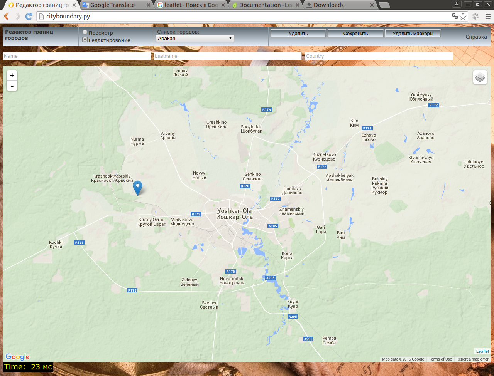
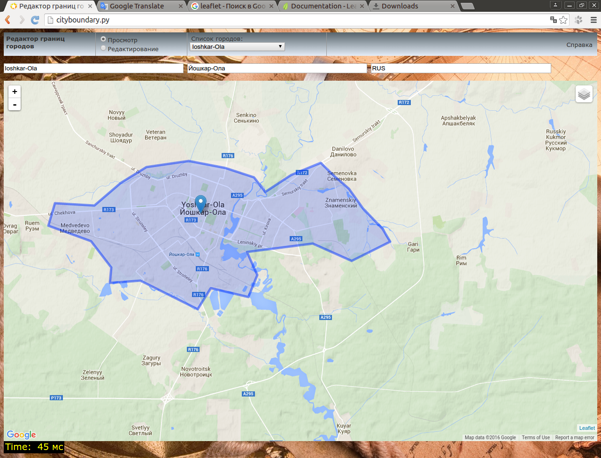
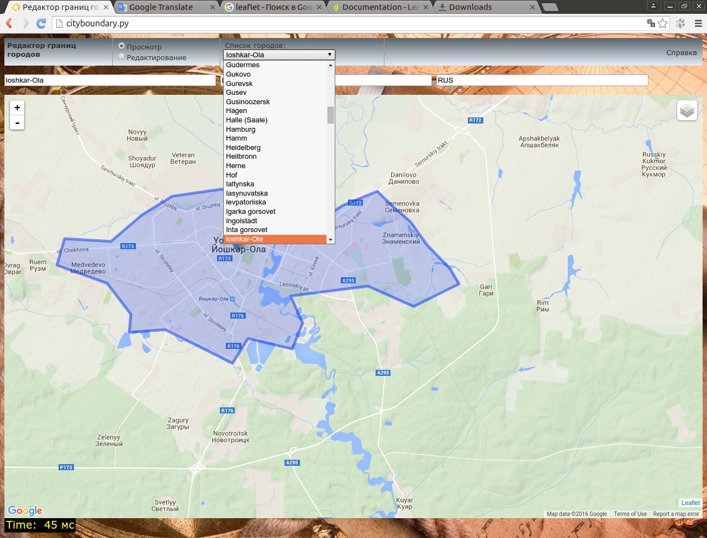
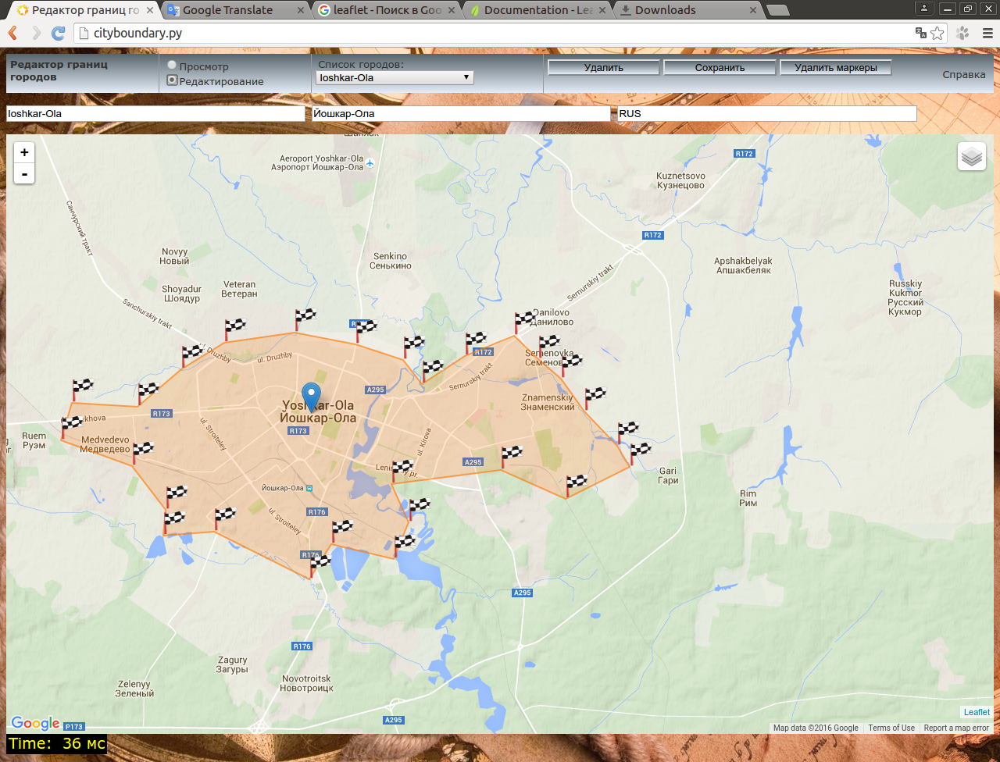

Справка по использованию редактора границ городов
На главную
Установка
Редактор границ городов представляет собой веб-приложение, серверная часть которого реализована на языке Python,
как WSGI приложение.
ТРЕБОВАНИЯ
- ОС Ubuntu 14.04
- Веб-сервер Apache 2.4
- Python 2.7.xx - обычно уже установлен в системе
СОСТАВ
каталог
html - frontend, веб приложение
каталог
wsgi_app - серверная часть приложения
УСТАНОВКА
- mod_wsgi
sudo apt-get install -y libapache2-mod-wsgi
sudo a2enmod, вводим wsgi
sudo service apache2 restart
- spatialite
sudo apt-get install python-pyspatialite
НАСТРОЙКА
- настройка виртуального хоста
в каталоге
/etc/apache2/sites-enabled создаем файл конфигурации для виртуального хоста,
например
cityboundary.conf. Расширение "conf" обязательно.
Пример содержания этого файла у меня:
<VirtualHost *:8080>
ServerName cityboundary.py
ServerAdmin webmaster@example.com
DocumentRoot /home/user1/www/cityboundary/html
ErrorLog ${APACHE_LOG_DIR}/error.log
<Directory /home/user1/www/cityboundary/html>
Order allow,deny
Allow from all
</Directory>
WSGIScriptAlias /searchcity /home/user1/www/cityboundary/wsgi_app/searchcity.py
WSGIScriptAlias /addcity /home/user1/www/cityboundary/wsgi_app/addcity.py
WSGIScriptAlias /delcity /home/user1/www/cityboundary/wsgi_app/delcity.py
WSGIScriptAlias /editcity /home/user1/www/cityboundary/wsgi_app/editcity.py
WSGIScriptAlias /listcity /home/user1/www/cityboundary/wsgi_app/listcity.py
WSGIScriptAlias /getcity /home/user1/www/cityboundary/wsgi_app/getcity.py
WSGIDaemonProcess cityboundary.py processes=2 threads=15 display-name=%{GROUP}
WSGIProcessGroup cityboundary.py
</VirtualHost>
Директива DocumentRoot /home/user1/www/cityboundary/html должна указывать на каталог html
В директивах типа WSGIScriptAlias /searchcity /home/user1/www/cityboundary/wsgi_app/searchcity.py
указывается URL при обращении по которому Apache будет вызывать wsgi приложение и путь к этому приложению
Таких директив может быть не одна.
Перезапускаем веб-сервер sudo service apache2 restart.
Для обращения к веб приложению через браузер добавляем в /etc/hosts строку 127.0.0.1 cityboundary.py
В скриптах в каталоге
wsgi_app в переменных DB_DIR и CITY_DB_FILE нужно указать
путь и имя файла базы данных соответственно, например:
DB_DIR = '/home/user1/game1/db/'
CITY_DB_FILE = 'city.sqlite'
Создание файла базы данных описано в файле
help(mk_citybase.py).txt в каталоге
doc
Интерфейс
Интерфейс программы представлен на рисунке. На верхней панели расположен переключатель режима
"Просмотр/Редактирование", выпадающий список со списком городов, имеющихся в базе. В базе хранятся следующие данные по городам:
Английское имя, национальное имя(может отсутствовать), код страны, геометрия границы в формате GeoJSON, максимальные
и минимальные значения широты и долготы.
В режиме "Редактирование" появляются кнопки
"Удалить" - для удаления записи города из базы, "Сохранить" - для сохранения изменений данных по текущему городу
в базе, либо для добавления записи о новом городе, "Удалить маркеры" - для удаления маркеров границы города с карты.

Просмотр границ города
Для просмотра имеющейся в базе границы города в режиме "Просмотр" нужно кликнуть на карте по имеющемуся городу.
Если данные о городе есть в базе и место клика находится в границах города, то на карте эта граница будет отображена
в виде полигона. Также английское название города покажется в выпадающем списке. В текстовых полях над картой отобразятся имена и код страны.

Можно также в выпадающем списке выбрать нужный город и он будет отображен на карте вместе с полигоном, обозначающем границы.

Редактирование границ и названий
Для редактирования границ либо названий нужно выбрать нужный город, кликнув по нему на карте, либо выбрав
из выпадающего списка, затем переключиться в режим "Редактирование". В узлах полигона города
появятся флажки, которые можно передвигать.

Для добавления новых флажков нужно кликнуть на карте. Отредактировав
границы нужно нажать кнопку "Сохранить" для записи новых данных в базу. Также можно редактировать имена и код
страны в текстовых полях над картой. Для удаления всех маркеров границы нажать кнопку "Удалить маркеры".
Добавление нового города
Для добавления нового города в базу нужно переключиться в режим "Редактирование", заполнить в текстовых полях над картой
имена и код страны, маркерами на карте обозначить полигон границы и нажать кнопку "Сохранить".
Удаление существующей записи о городе
Для удаления существующей записи о городе нужно выбрать нужный город, кликнув по нему на карте, либо выбрав
из выпадающего списка, затем нужно переключиться в режим "Редактирование" и нажать кнопку "Удалить".
На главную